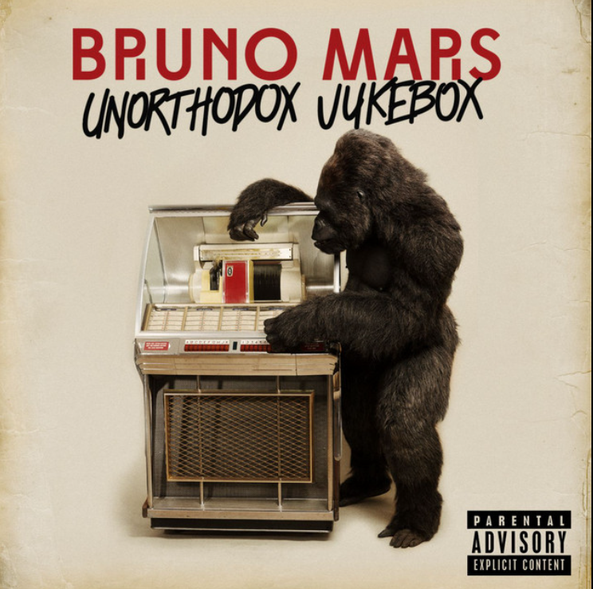
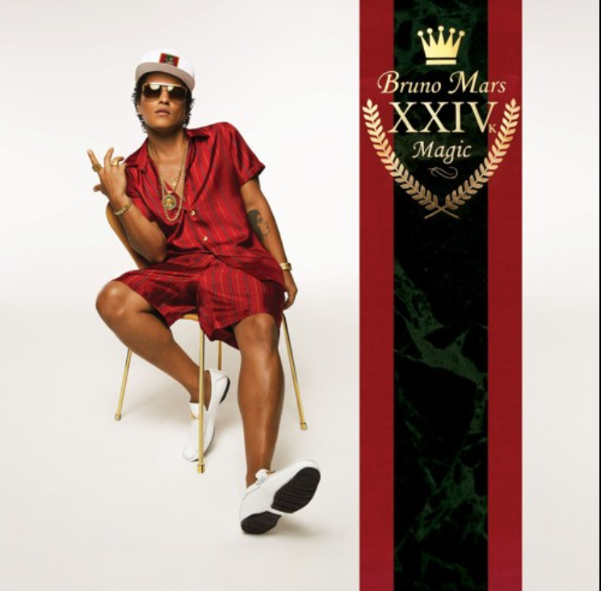

| Image | Release Date | Title | Fun Fact |
|---|---|---|---|
 |
December 7, 2012 | Unorthodox Jukebox | This album won Album of the Year at the 2014 Grammy Awards, making Bruno Mars the youngest artist to win the award at that time. |
 |
November 18, 2016 | 24K Magic | The album's title track was inspired by Michael Jackson's style, and the album features a mix of R&B, funk, and pop influences. |
|
October 4, 2010 | Doo-Wops & Hooligans | Bruno Mars' debut album, it includes the hit single "Just the Way You Are," which won a Grammy for Best Male Pop Vocal Performance. |